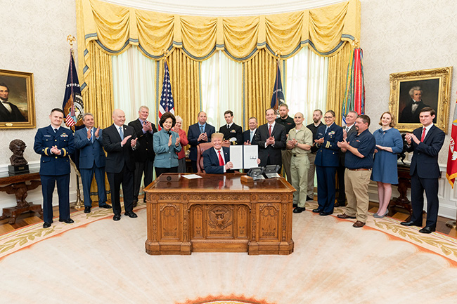

President Signs Military to Mariner Executive Order and FAQs
Posted On: May 3, 2019
On Monday, March 4, President Trump signed Executive Order (EO) 13860 on Supporting the Transition of Active Duty Service Members and Military Veterans into the Merchant Marine. This EO brings attention to the vital importance of the U.S. Merchant Marine for national security, safety, and prosperity, and aims to more easily facilitate the transition of active duty service members into the U.S. maritime industry.
Hiring veterans makes good business sense. Federal Departments and agencies have been working diligently for several years to support Veterans transitioning from active duty service to civilian employment, and ensure that applicable mariner-related experience and training are appropriately credited towards a merchant mariner credential (MMC). The U.S. Merchant Marine and the maritime industry in general will benefit greatly from the skills and experience of sea-going service members and other Veterans.

President Donald J. Trump signs Executive Order 13860 on March 4, 2019
President Donald J. Trump signs Executive Order 13860 on March 4, 2019. The President was joined by Secretary of Transportation Elaine L. Chao, Secretary of Labor Alexander Acosta, Maritime Administrator Mark Buzby, Deputy Maritime Administrator Richard Balzano, CMTS Executive Director Helen Brohl, Active Duty Service Members, and Merchant Mariners.
1. How significant is President Trump's Executive Order?
“As our strategic competitors expand their global footprint, the United States must retain its ability to project and sustain forces globally. This capability requires a sufficient corps of credentialed merchant mariners available to crew the necessary sealift fleet. Attracting additional trained and credentialed mariners, particularly from active duty service members and military veterans, will support United States national security requirements and provide meaningful, well-paying jobs to United States veterans." – EO 13860 Section 1
This EO directs the Departments of Defense and Homeland Security to reduce the barriers or hurdles that stand in the way of military service members interested in earning merchant marine credentials. Those barriers include:
substantial military training in career fields relevant to the Merchant Marine that is not currently certified by the U.S. Coast Guard (USCG) for merchant mariner credentialing;
fees for obtaining Transportation Worker Identification Credential (TWIC) cards and MMCs; and
difficulty in documenting past sea experience for the purpose of earning MMCs above entry level.
2. Who does this Executive Order apply to?
The EO states that all “applicable services" to include any of the “armed forces," as defined in 10 USC §101(a)(4)(A), which are Army, Navy, Air Force, Marine Corps and USCG, are eligible for this program.
3. When will the EO go into effect?
This order went into effect at its signing. For Sec 3(i), within one year of March 4, 2019, all military training and experience within applicable services that may qualify for credit toward merchant mariner credentialing will be submitted to the USCG National Maritime Center (NMC) for consideration to meet mariner credentialing requirements. (The 2017 National Defense Authorization Act required all services to submit a report on military courses applicable to the MMC, which is already published and available.) For Sec 3(iv) not withstanding that there are internal processes toward implementation that need to be reviewed, members of the applicable services who request certification of sea service should receive it within one month of release from active duty. For Sec 3 (ii) Waiver of Fees (iii) TWIC card payments and (v) development of Credentialing Opportunities On-Line (COOL) programs are tasks that the responsible parties will continue progress towards.
4. Which Department or official is responsible for implementing this Executive Order?
The Departments of Defense and Homeland Security are tasked with the implementation of the EO in support of merchant mariner credentialing and maintenance of those credentials. The U.S. Committee on the Marine Transportation System (CMTS) is directed to report annually on the implementation of the EO and to pursue innovative ways to support merchant mariner credentialing, including through its Military to Mariner Initiative.
5. How does this order fit into overall efforts to recruit and retain merchant mariners that is already underway?
In 2014, the CMTS (www.CMTS.gov) formed the Military to Mariner Task Force to help coordinate Federal efforts to facilitate the transition from military service to civilian employment in the U.S. Merchant Marine, and other positions within the U.S. Marine Transportation System. The military sea service agencies have been very proactive to address many of the challenges of transitioning sea service personnel to the U.S. Merchant Marine. The Task Force members have committed time and resources to:
- crosswalk military ship-board training and qualifications to mariner credential requirements;
- assign permanent staff to the Navy and USCG COOL projects;
- align all related military occupational specialties and ratings in the Army,
Navy, and USCG to the applicable USCG maritime licenses and established policies to help active duty personnel cover associated costs through the COOL programs;
make available to Sailors “best sources" training opportunities though Navy COOL, in partnership with Military Sealift Command (MSC); these courses can be used for gap/delta training to help prepare Sailors for USCG credentials;
- enable USCG Academy graduates to receive a 100 Ton Master-Near Coastal Credential upon graduation;
- increase the number of service training courses approved for MMCs; and
- identify ways to recruit, train, and retain Merchant Mariners to support both national Defense and Federal mission accomplishment.
Please visit https://www.cmts.gov/topics/m2m for more information about the CMTS Military to Mariner initiative.
6. How many additional merchant mariners do you hope to attract with the help of this Executive Order?
The Maritime Workforce Working Group Report to Congress estimates that an additional 1,800 mariners are needed to support the U.S. Flag Fleet during times of national emergency. While service members and Veterans will not completely fill this gap, it will help offset the staffing needs of the U.S. maritime industry. The USCG NMC manually tracks how many Veterans are applying for MMCs; approximately 1% of applicants have some level of military connection.
It is not possible to estimate how many more merchant mariners will be attracted to the industry by this EO, but anecdotally many stakeholders have expressed their support. As the applicable services continue to enhance their transition support activities related to the military to mariner initiative, while eliminating the previous roadblocks, we anticipate that personnel with sea service experience will recognize the opportunities of the merchant marine.
7. What is a TWIC® card and is there an opportunity to have it paid for?
The Transportation Worker Identification Credential (TWIC®) is required for workers who need access to secure areas of the nation’s maritime facilities and vessels, and involves an applicant background check. Obtaining a TWIC® is the first step in acquiring a MMC. TWIC® applications are serviced through the credentialing authority, the Transportation Security Administration (TSA). For more information and to apply for a TWIC, please visit the TWIC® page at the TSA website.
Certain current service members can have a TWIC® paid for by their respective services through the Voluntary Credentialing Programs, which can be accessed through the COOL sites to verify applicability. The Navy provides reimbursement of TWIC® fees for eligible Active Duty and Reserve Enlisted Sailors. The Army Transportation School pays for TWIC® cards for all eligible Army mariners. The USCG expects to reimburse TWIC® fees paid by its Enlisted service members and is finalizing policy to include methods for submitting an application to the USCG’s Voluntary Credentialing Office in order to obtain preapproval of reimbursement for the TWIC® fees.
Certain maritime industries pay for TWIC® cards and renewal fees for their employees, but this is dependent on the employer.
8. I am an active duty service member or Veteran. What resources are available to me to get a Merchant Mariner Credential?
The USCG NMC is the authoritative organization for the issuance of the MMC. Getting a MMC is a multi-step process, and the NMC strives to provide mariners with the resources needed to successfully meet their requirements and receive a credential. NMC even has a convenient Live Chat, where mariners can securely connect with the NMC staff members with questions.
One of the most robust resources is the Navy COOL, a step by step resource mapping skills, training, and credentials needed to meet certain mariner qualifications, and even where GI Bill benefits can be used to meet those requirements. A similarly robust USCG COOL program is now publicly available, with potential credential funding in 2020. The Department of Labor's (DOL) My Next Move and O*Net also provide crosswalks and ability to identify employment opportunities fitting a Veteran's experience and interests.
Certain MMCs, for example, those in the Deck and Engineering Departments, require applicants to complete training and complete USCG-administered tests. Other merchant mariner credentials such as USCG Certificates of Registry, require applicants to present evidence to the USCG of competency or certification by another organization. Suffice it say that if you worked on a surface or subsurface vessel in the deck, engineering/electrical/electronics, operations, navigation, culinary, logistics, administration, communications, or information technology/computer network management field, your experience may qualify you for an advanced or specialized MMC, or it may help you earn it more quickly. Additionally, selected employers such as MSC seek mariners with special skills, such as small boat operation, or very strong swimming ability, for collateral duty responsibilities such as Surface Rescue Swimmer.
9. I am a maritime employer and would like to hire more Veterans. What resources are available to me?
DOL's Veterans' Employment & Training Service (VETS) website at www.VETERANS.gov contains a variety of employer resources, including an Employer Guide to Hire Veterans that highlights the growing number of resources for companies wishing to hire and retain Veterans. There are links on VETERANS.gov where you can post a job and receive one-on-one assistance from Regional Veterans' Employment Coordinators. DOL recently launched the HIRE Vets Medallion Program that provides national level recognition for employers who hire, retain, and support veterans. Transitioning Service Members and Veterans search the list of HIRE Vets Medallion Program recipients to focus their job searches.
Employers can post available openings on VETERANS.gov and the American Maritime Partnership's MilitarytoMaritime.org website.
10. I represent a maritime training center and would like to encourage more Veterans to participate in my programs. How can I make it easier for Veterans to use GI Bill benefits to enroll in my courses?
For a Veteran to use their GI Bill benefits at an educational institution, the program/course must be approved through a State Approving Agency (SAA). SAA's are the entity authorized by the Veteran's Administration to provide approval, oversight, training, and outreach activities, to ensure the quality of programs of education and proper administration of GI Bill benefits. Find your SAA.
SAA approval is in addition to course approval by the USCG NMC. Visit the USCG NMC Training and Assessment webpage for more information.
11. I am a private sector individual and would like to lend my expertise to this Military to Mariner discussion. Where can I contribute?
The Merchant Mariner Personnel Advisory Committee (MERPAC), a USCG Federal Advisory Committee, has an open and ongoing Task Statement related to supporting the progress made by military services towards meeting the goals on the use of Military Education, Training, and Assessment for STCW and National Mariner Endorsements. MERPAC welcomes participation and input from non-Federal stakeholders in informing USCG decision making on merchant mariner issues.
CMTS Issues a New Research and Development Plan for the Marine Transportation System
Posted On: July 1, 2017
The CMTS Coordinating Board released the update to the Strategic Action Plan for Research and Development in the Marine Transportation System, June 2017. This strategic action plan for research and development (R&D) identifies priority needs and next steps to address U.S. Marine Transportation System (MTS) improvements to meet the most pressing needs of users and operators. The plan was forwarded to Transportation Secretary and CMTS Chair Elaine L. Chao on July 12, 2017, by Coordinating Board Chair Rear Admiral Paul Thomas, Assistant Commandant for Prevention Policy.
One of the primary research and development needs identified in the report is to collaborate across transportation modes, with both public and private sectors, to create a high-fidelity freight flow model that accurately reflects national freight flow, including the MTS and multimodal connections.
Such a tool has the potential to answer these and similar complex questions:
Where are the most significant system bottlenecks that have the greatest constraining effects on overall MTS capacity?
To what extent does MTS port areas, terminals, and intermodal connection points act to constrain the seamless flow of freight across transportation modes?
Where can targeted investments and operational changes best increase MTS reliability, provide the greatest return on investment (ROI), and eliminate significant vulnerabilities?
Does intermodal freight flow more efficiently across all modes if a navigation channel in a particular port is dredged three feet deeper?
If a marketplace dispute leads to throughput disruptions across a region, is there sufficient capacity for that cargo to move to another region?
Does chronic traffic congestion near a port subtract from the transportation cost savings provided by deeper and wider navigation channels?
The Strategic Action Plan was developed by the CMTS Research and Development Integrated Action Team (R&D IAT), which was established by the CMTS Coordinating Board in March 2009 to provide a strategic capability to identify and implement innovative research and to develop new products in response to pressing challenges. In 2011, the R&D IAT issued the Strategic Action Plan for Research and Development in the MTS, which it has been implementing. One milestone to implement the Strategic Action Plan is to bring Federal agencies together with industry and academia for the next biennial CMTS-TRB R&D conference, slated for June 19-21, 2018, at the National Academies of Science in Washington, DC.
Contacts for the R&D-IAT: Jeff Lillycrop, USACE Technical Director (Jeff.Lillycrop@usace.army.mil), and Lauren Knapp, USACE Staff/Knauss Fellow (Lauren.A.Knapp@usace.army.mil).
Now Available: The CMTS report "Recommendations and Criteria for Using Federal Public-Private Partnerships to Support Critical U.S. Arctic Maritime Infrastructure"
January 3, 2017
Infrastructure investment is vital for economic growth and prosperity in the Arctic, especially given the significant infrastructure gaps currently faced. P3s represent a promising approach that can leverage the strengths of the private and public sectors to expand and improve Arctic infrastructure. The 19 recommendations can be used to help guide the planning process for Federal departments and agencies as well as for communities and industry who are interested in exploring the possibilities P3s may offer for their infrastructure priorities.
Infrastructure investment is vital for economic growth and prosperity in the Arctic, especially given the significant infrastructure gaps currently faced. P3s represent a promising approach that can leverage the strengths of the private and public sectors to expand and improve Arctic infrastructure. The 19 recommendations can be used to help guide the planning process for Federal departments and agencies as well as for communities and industry who are interested in exploring the possibilities P3s may offer for their infrastructure priorities.
This report fulfills the National Strategy for the Arctic Region (NSAR) Implementation Plan Action 1.1.3 to "develop recommendations for pursuing Federal public-private partnerships in support of the needs assessment and identified prioritized activities." Action 1.1.3 draws upon existing products developed by the CMTS, independently by CMTS participating member Federal agencies, published reports from outside the Federal government, and outreach with Arctic stakeholders and tribal representatives. This report also completes the third and final task assigned to the CMTS by the Secretary of Transportation under the NSAR Implementation Plan.
Please forward any questions or comments regarding the report to ArcticMTS@cmts.gov.
MG John Peabody Turns Over CMTS Coordinating Board Chairmanship to the Secretary of Commerce
Posted On: July 1, 2015 MJ John Peabody speaking to the CMTS Coordinating Board
CMTS Maritime Energy Task Team (METT)
Posted On: December 2, 2014
The Task Team supports Federal efforts to address the issue of alternative ship fuels, including Liquified Natural Gas (LNG); to reduce the impact maritime transport has on greenhouse gas emissions and climate change; and to meet anticipated air pollution requirements on ships.
The Task Team is co-led by the US Department of Energy (DOE) and the Maritime Administration (MARAD), and its membership is comprised of representatives from 13 CMTS member Departments and agencies: the DOE, MARAD, the Saint Lawrence Seaway Development Corporation (SLSDC), the US Coast Guard (USCG), the US Department of the Interior/Bureau of Ocean Energy Management (DOI/BOEM), the National Oceanic and Atmospheric Administration (NOAA), the Federal Maritime Commission (FMC), the US Army Corps of Engineers (USACE), the US Department of State, the Environmental Protection Agency (EPA), the Navy, the Department of Defense (DoD), and the US Department of Agriculture (USDA).
Since February 2014, the Task Team has held 6 meetings to present and share information on maritime energy. Meetings have included presentations on the Navy's Great Green Fleet Program; MARAD's Biofuels, Liquified Natural Gas (LNG), and Fuel Cell projects; the USDA's Farm-to-Fleet Program; NOAA's Dual-Fuel Project; and USDA, DOE, and Navy efforts to produce jet and diesel biofuels. In addition, guest presentations on LNG have been given by the Port of Pittsburgh, the Port of Jacksonville, and the Great Lakes Maritime Research Institute (GLMRI).
The Task Team produced a compendium and a summary matrix of approximately 30 relevant Federal alternative fuels and natural gas activities carried out jointly or individually by CMTS agencies. The compendium and matrix are intended to be tools to help identify opportunities for interagency collaboration.
Some notable endeavors include the following: 1) The report on "U.S. Arctic Marine Transportation System: Overview and Priorities for Action" was completed; 2) A CMTS Communication Plan was developed and approved, and its contents have since been completed and made available for viewing; and 3) The S-100 Universal Hydrographic Data Model was adopted.
The Compendium of Federal Programs in the Marine Transportation System is the first-ever categorical matrix of programs and functions for the 35 Federal Departments, agencies, and bureaus engaged with the US Marine Transportation System (MTS).